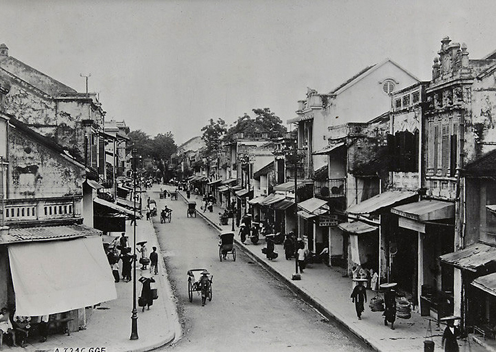
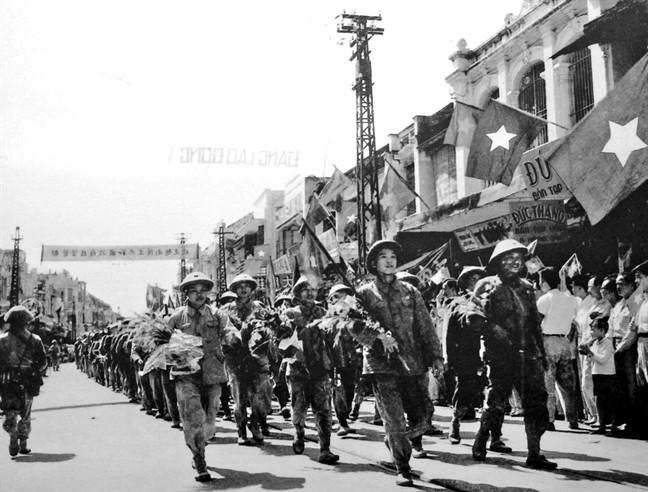
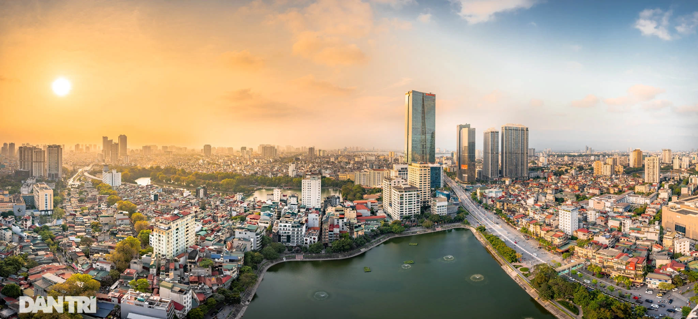

Lịch sử Hà Nội (tóm tắt chi tiết)
Thời cổ & Trung đại
Khu vực Hà Nội có lịch sử định cư lâu đời. Năm 1010, vua Lý Công Uẩn dời đô ra sông Hồng, đặt tên Thăng Long — bắt đầu kỷ nguyên mới. Thăng Long là trung tâm nhiều triều đại phong kiến, phát triển văn hoá, hành chính.

Thời Pháp thuộc & kháng chiến
Cuối thế kỷ 19, Hà Nội chịu ảnh hưởng kiến trúc – quy hoạch Pháp. Trong thế kỷ 20, nơi đây trở thành trung tâm của phong trào cách mạng và kháng chiến giành độc lập.
Giải phóng Hà Nội (10/10/1954)
Ngày 10/10/1954, Hà Nội được giải phóng khỏi ách thống trị thực dân Pháp. Đây là bước ngoặt lịch sử, mở ra thời kỳ mới trong tiến trình phát triển.
Giai đoạn hiện đại
Từ năm 1976 đến nay, Hà Nội trở thành thủ đô thống nhất, mở rộng địa giới, phát triển hạ tầng, kinh tế và văn hoá. Thủ đô đã tổ chức nhiều sự kiện quốc tế lớn, khẳng định vị thế trong khu vực.
